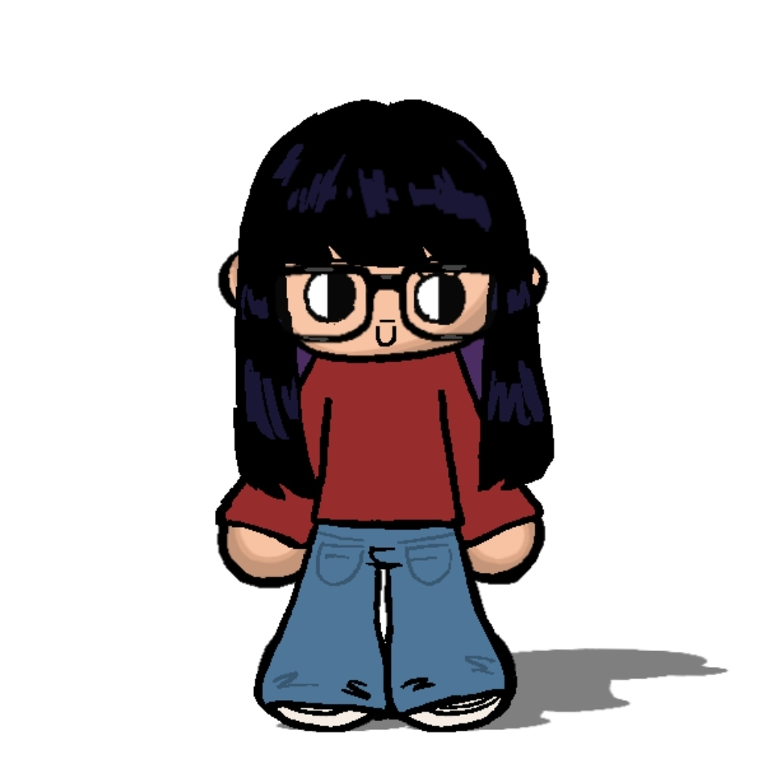
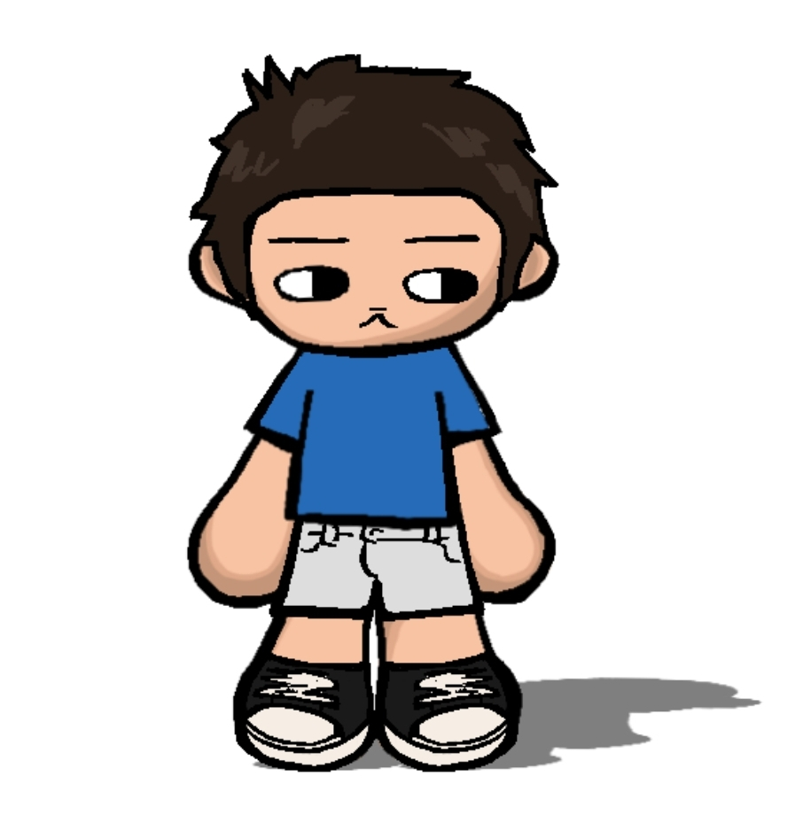
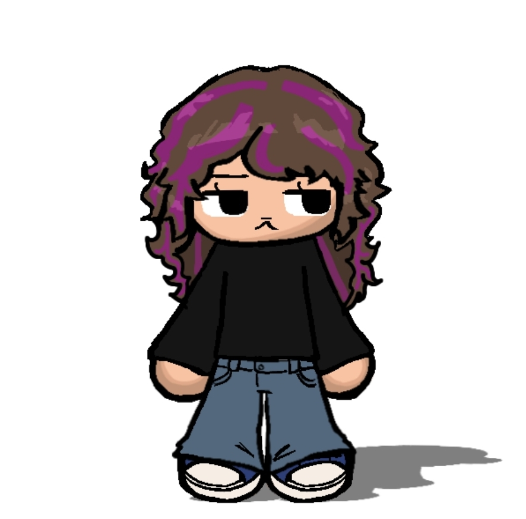
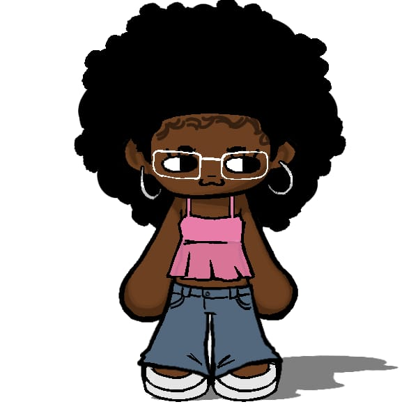
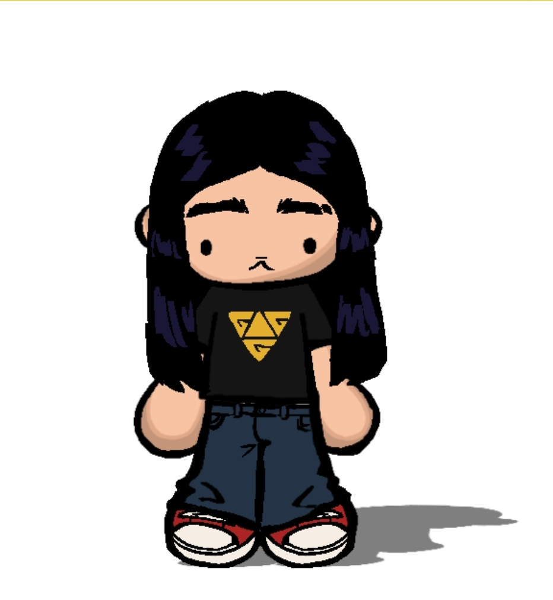

Quem Somos
Somos estudantes interessados em compreender como a desinformação influencia o cotidiano das pessoas e como a educação digital pode reduzir esse problema.

André

Arthur Neves

Gabrielle

Téo
Nossa Missão
Escolhemos falar sobre Fake News porque elas fazem parte da realidade de praticamente todas as pessoas conectadas à internet. Muitas notícias falsas parecem verdadeiras e acabam influenciando decisões importantes relacionadas à saúde, política, educação e segurança.
Nosso objetivo é incentivar o pensamento crítico, ensinar formas simples de verificar informações e mostrar que qualquer pessoa pode ajudar a diminuir a propagação da desinformação.
O Problema em Números
| Indicador | 2018 | 2020 | 2022 | 2024 |
|---|---|---|---|---|
| Pessoas preocupadas com Fake News (%) | 63% | 72% | 79% | 84% |
| Uso de verificadores de fatos | Baixo | Médio | Alto | Muito Alto |
| Plataformas com políticas contra desinformação | Poucas | Algumas | Maioria | Ampliadas |
| Fontes: UNESCO, Agência Lupa, Aos Fatos e estudos acadêmicos sobre desinformação. | ||||
Linha do Tempo
- 2016 - O termo "Fake News" ganha destaque mundial durante processos eleitorais.
- 2018 - A desinformação passa a ser debatida intensamente nas eleições brasileiras.
- 2020 - Durante a pandemia, informações falsas sobre saúde aumentam drasticamente.
- 2022 - Redes sociais ampliam ferramentas de denúncia e checagem.
- 2024 - Crescem projetos de educação midiática e alfabetização digital.